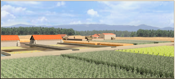

RTR: Imperium Surrectum
RTR: Imperium SurrectumMarsh Drainage Channels (Crops) chain
5 levels, each replacing the one before it — you upgrade in place rather than building alongside.
Marsh Drainage Channels (Crops) → Reclamation Embankments (Crops) → Drainage Pumps (Crops) → River Diversion Dyke (Crops) → Reclaimed land Estates (Crops)
Pictures are the game's own building art. Where a culture ships none of its own, the game falls back to another culture's, and that is what is shown here.
Levels at a glance
| Level | Cost | Build time | Minimum settlement | Upgrades to | Level | Cost | Build time | Minimum settlement | Upgrades to | ||
|---|---|---|---|---|---|---|---|---|---|---|---|
| Marsh Drainage Channels (Crops) | 2,400 | 4 | town | Reclamation Embankments (Crops) | Reclamation Embankments (Crops) | 4,800 | 6 | large town | Drainage Pumps (Crops) | ||
| Drainage Pumps (Crops) | 8,200 | 8 | city | River Diversion Dyke (Crops) | River Diversion Dyke (Crops) | 11,800 | 10 | large city | Reclaimed land Estates (Crops) | ||
| Reclaimed land Estates (Crops) | 15,400 | 12 | huge city | — |
Costs in denarii, build time in turns.
Marsh Drainage Channels (Crops)

The initial, costly digging of canals to begin draining marshland.
Our people have long endured living next to these stinking and unhealthy marshes, but some have also seen the opportunity that these wetlands represent. If only the water could be drained a little, then fertile land could be uncovered, its soil enriched with centuries worth of deposited silt and plant life. By digging ditches similar to those used for irrigation, we can begin the work of draining these marshes. Such a work is lengthy and expensive, but as the philosophers say, a mountain can be levelled one stone at a time, so surely a swamp can be emptied one spadeful at a time.
Marshland reclamation farming is available here because this is a wetlands region, and your faction has the technological knowhow to drain it.
Note on the effects
Some levels of this building chain might have both positive and negative growth modifiers on the same building, this is due to a modding limitation. In these cases, all effects apply. So if it says +3 growth and -0.5 growth, your total growth is +2.5.
Tip: put any building in the building queue (and only that one) and look at the 'Settlement income' and 'Settlement details' tabs to see its complete effects highlighted in green and red.
| Cost | 2,400 denarii | Build time | 4 turns | Minimum settlement | town | Upgrades to | Reclamation Embankments (Crops) |
What it does
- +1 farming level
- -2 taxable income (player only)
Show 2 effects that apply only in the circumstances shown
- +1 trade income — only when
resource fruits or resource hemp or resource flax or resource papyrus or resource wine or resource olive_oil or resource cotton - -2 taxable income — only when
not is_player and building_present_min_level marsh_reclamation drainage_canals
River Diversion Dyke (Crops)

Dams rerout rivers to limit the inflow of water
The next, admittedly expensive, step in draining this marshland is limiting the inflow of water. By strategically placing strong dams in the surrounding streams and, where necessary, by wholly redirecting stretches of river, we can get the water away from these wetlands and towards areas that can better use it. This equalizing effort does not extend to the ownership of the reclaimed lands, however, as the most wealthy tradesmen and the military elite have acquired the rights to it.
Marshland reclamation farming is available here because this is a wetlands region, and your faction has the technological knowhow to drain it.
Note on the effects
Some levels of this building chain might have both positive and negative growth modifiers on the same building, this is due to a modding limitation. In these cases, all effects apply. So if it says +3 growth and -0.5 growth, your total growth is +2.5.
Tip: put any building in the building queue (and only that one) and look at the 'Settlement income' and 'Settlement details' tabs to see its complete effects highlighted in green and red.
| Cost | 11,800 denarii | Build time | 10 turns | Minimum settlement | large city | Upgrades to | Reclaimed land Estates (Crops) |
What it does
- -2 population growth (player only)
- -8 taxable income (player only)
Show 6 effects that apply only in the circumstances shown
- +9 farming level — only when
not resource grain and not sulphur_building_supply - +10 farming level — only when
resource grain or sulphur_building_supply - -2 population growth — only when
is_player and building_present_min_level marsh_reclamation imperial_drainage - +1 trade income — only when
resource fruits or resource hemp or resource flax or resource papyrus or resource wine or resource olive_oil or resource cotton - -8 taxable income — only when
not is_player and building_present_min_level marsh_reclamation imperial_drainage - +5 taxable income — only when
slave_trade_building_supply
Reclamation Embankments (Crops)

Embankments to hold back water and reclaim more fertile swampland.
In these marshes, the state has smelled the opportunity to greatly increase revenues and to gain new lands to hand out to loyal settlers, all without the risks of military conquest. By intersecting the waterlogged land with stout embankments, we have gained greater control over the water levels that were previously so fickle. Some fields can be drained completely, while others may be intentionally flooded occasionally to act like irrigation basins. By doing so, we are changing a swampy wasteland into a new fertile land that supports our growing civilization.
Marshland reclamation farming is available here because this is a wetlands region, and your faction has the technological knowhow to drain it.
Note on the effects
Some levels of this building chain might have both positive and negative growth modifiers on the same building, this is due to a modding limitation. In these cases, all effects apply. So if it says +3 growth and -0.5 growth, your total growth is +2.5.
Tip: put any building in the building queue (and only that one) and look at the 'Settlement income' and 'Settlement details' tabs to see its complete effects highlighted in green and red.
| Cost | 4,800 denarii | Build time | 6 turns | Minimum settlement | large town | Upgrades to | Drainage Pumps (Crops) |
What it does
- -1 population growth (player only)
- -4 taxable income (player only)
Show 5 effects that apply only in the circumstances shown
- +3 farming level — only when
not resource grain - +4 farming level — only when
resource grain - -1 population growth — only when
not is_player and building_present_min_level marsh_reclamation reclamation_dike - +1 trade income — only when
resource fruits or resource hemp or resource flax or resource papyrus or resource wine or resource olive_oil or resource cotton - -4 taxable income — only when
not is_player and building_present_min_level marsh_reclamation reclamation_dike
Drainage Pumps (Crops)

An organized system of dikes and pumps to reclaim large areas of land
In the low areas, where the water seems determined to gather and stay, the wiles of man may yet coax it away. With the labour of man and beast, wheels are turned to pump it all out. Some of these pumps are great waterwheels with buckets scooping the water up, while others employ an ingenious screw some mathematician from Syracuse claims to have invented, yet we know our people were already using it before he was even born. With such technologies, far more marshland can be drained and be brought under the plow.
Marshland reclamation farming is available here because this is a wetlands region, and your faction has the technological knowhow to drain it.
Note on the effects
Some levels of this building chain might have both positive and negative growth modifiers on the same building, this is due to a modding limitation. In these cases, all effects apply. So if it says +3 growth and -0.5 growth, your total growth is +2.5.
Tip: put any building in the building queue (and only that one) and look at the 'Settlement income' and 'Settlement details' tabs to see its complete effects highlighted in green and red.
| Cost | 8,200 denarii | Build time | 8 turns | Minimum settlement | city | Upgrades to | River Diversion Dyke (Crops) |
What it does
- -1 population growth (player only)
- -6 taxable income (player only)
Show 5 effects that apply only in the circumstances shown
- +5 farming level — only when
not resource grain and not sulphur_building_supply - +6 farming level — only when
resource grain or sulphur_building_supply - -1 population growth — only when
not is_player and building_present_min_level marsh_reclamation polder_system - +1 trade income — only when
resource fruits or resource hemp or resource flax or resource papyrus or resource wine or resource olive_oil or resource cotton - -6 taxable income — only when
not is_player and building_present_min_level marsh_reclamation polder_system
Reclaimed land Estates (Crops)

Vast estates on what was previously a marshland
As it has now been practically drained, this land is no longer a literal swamp, though perhaps in figurative sense it still is as the nobility has been drawn to it as were the flies before. The elite has profited greatly from speculating in the reclamation projects and have bought up the land to set up great estates worked by contract farmers and slaves. From what was previously a useless and dangerous morass, a bounty of goods now flows. Though without careful attention to the drainage works it could all sink back into a mire.
Marshland reclamation farming is available here because this is a wetlands region, and your faction has the technological knowhow to drain it.
Note on the effects
Some levels of this building chain might have both positive and negative growth modifiers on the same building, this is due to a modding limitation. In these cases, all effects apply. So if it says +3 growth and -0.5 growth, your total growth is +2.5.
Tip: put any building in the building queue (and only that one) and look at the 'Settlement income' and 'Settlement details' tabs to see its complete effects highlighted in green and red.
| Cost | 15,400 denarii | Build time | 12 turns | Minimum settlement | huge city |
What it does
- +1 population health
- -5 population growth (player only)
- -8 taxable income (player only)
- -2 public order (happiness) (player only)
Show 7 effects that apply only in the circumstances shown
- +12 farming level — only when
not resource grain and not sulphur_building_supply - +13 farming level — only when
resource grain or sulphur_building_supply - -5 population growth — only when
not is_player and building_present_min_level marsh_reclamation great_polders - +2 trade income — only when
resource fruits or resource hemp or resource flax or resource papyrus or resource wine or resource olive_oil or resource cotton - -8 taxable income — only when
not is_player and building_present_min_level marsh_reclamation imperial_drainage - -2 public order (happiness) — only when
not is_player and building_present_min_level marsh_reclamation imperial_drainage - +10 taxable income — only when
slave_trade_building_supply
What the shorthands in those conditions stand for (2)
These are the mod's own, quoted from the game files unchanged.
| Shorthand | Stands for | Shorthand | Stands for | ||||
|---|---|---|---|---|---|---|---|
slave_trade_building_supply | resource slave_trade or hidden_resource slave_supply_built factionwide | sulphur_building_supply | hidden_resource sulphur_supply_built factionwide |